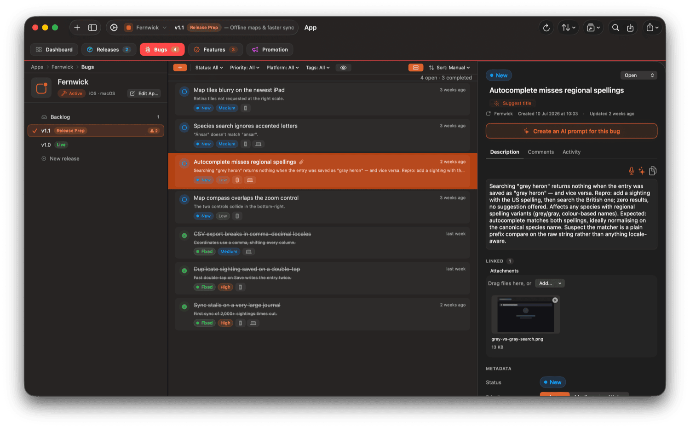
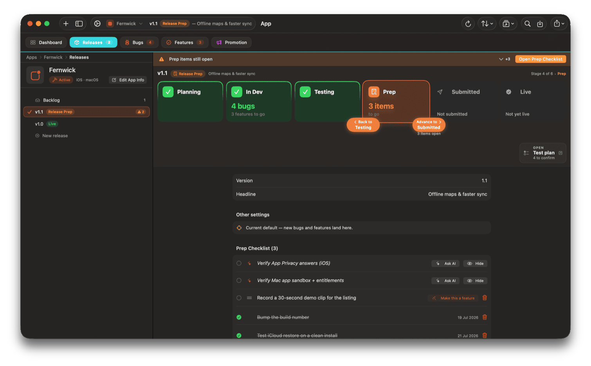
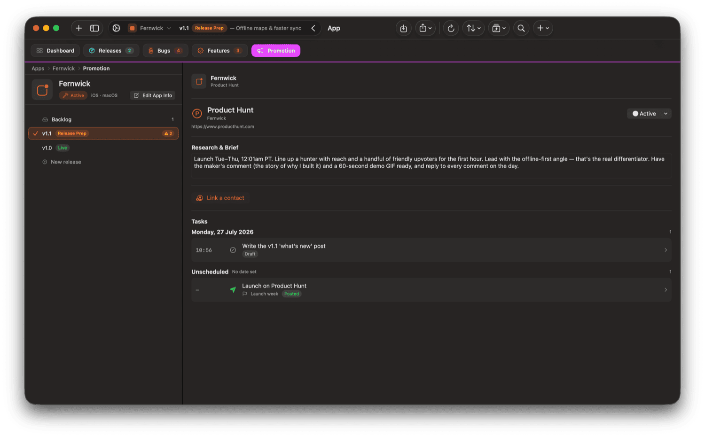
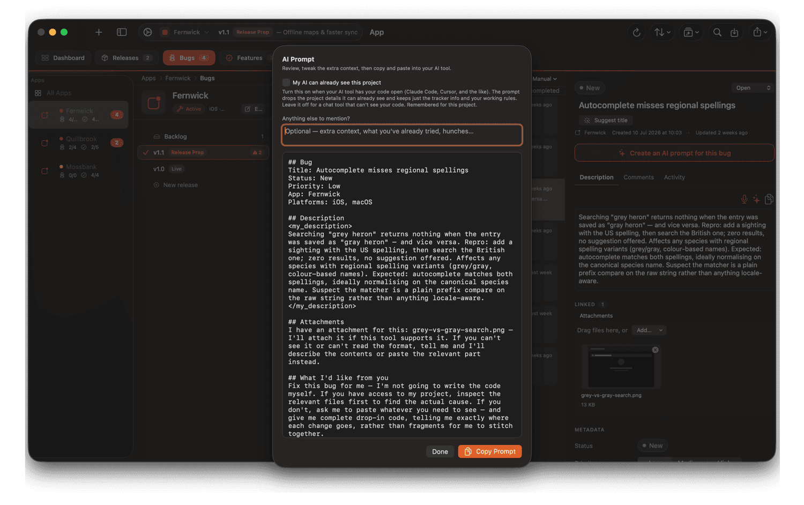

How it works
Four stages, in the order you actually hit themShape the idea
A guided reality check with your AI before you write a line of code — problem, rivals, review risks, money. Not going ahead is a valid outcome; twenty minutes here can save weeks.

Build it
Track bugs, features and tests in one place, and kick off the project with a plan-first prompt that keeps the AI building small, shippable milestones.

Ship it
The release checklist walks you to submission: store listing copy, App Privacy answers, deployment checks — and when Apple rejects, real help working out why and what to do.

Launch it
Shipping isn't the finish line — it's where a lot of good apps quietly stall, because promotion is the part developers are most likely to skip, or to do half-heartedly. Shape n Ship gives you a channel strategy matched to your actual app, then breaks it into ready-to-use tasks for each channel — so launch is something you work, not something you hope goes well.

Bring your own AI
No API keys. No extra AI bills.
Shape n Ship doesn't bundle an AI or charge for one. It writes expert prompts, packed with your project's real context, and you run them in whatever you already use — ChatGPT, Claude, Gemini, or your coding tool.
Your data stays in your own iCloud. That means you're never paying twice for the model you already have, and you're never stuck with whichever one we happened to pick. When you change tools, the prompts still work.

Pricing
The free tier is the trialYour first three projects
Idea through building and testing, with up to 15 tracked items (bugs and features combined) and one release each. The guided concept walkthrough and all development tracking are included.
Buy once — $34.99 lifetime
Pro removes the limits — unlimited projects, bugs, features and releases — and unlocks shipping: the release checklist and its store-listing, privacy and App Review prompts, rejection help, and the promotion module.
Or subscribe — $19.99/year.
Launch price $24.99 — rises to $34.99 shortly after launch.
No trial — the free tier is the trial.
Your data stays visible and exportable whether or not you're paying.
Prices shown in USD (or local equivalent).